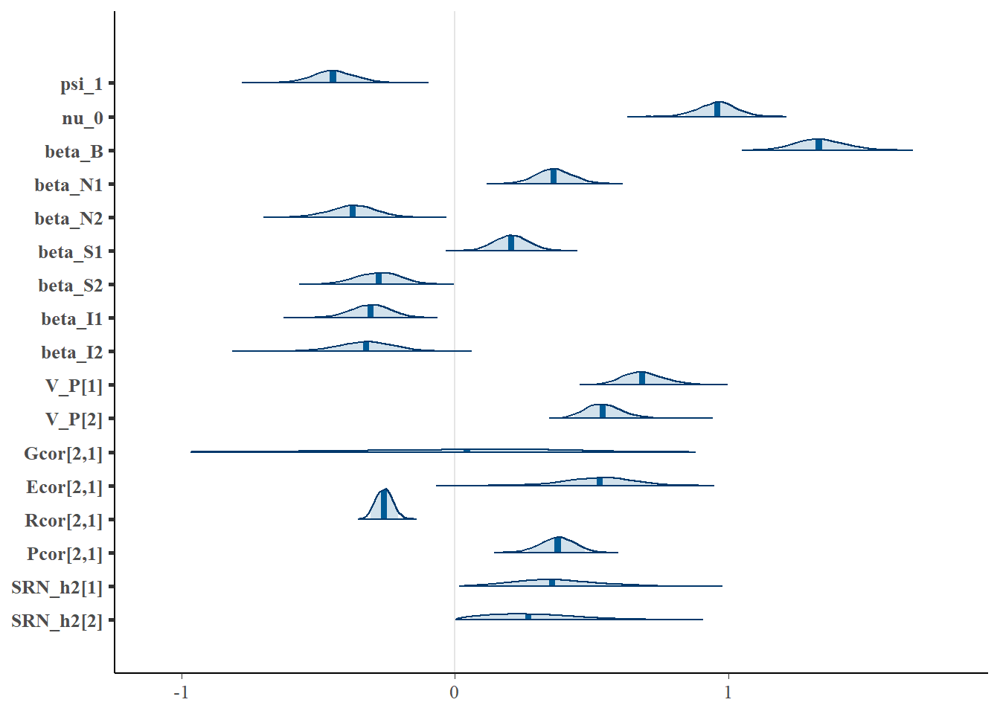

5 Fitness model
This chapter is a work in progress.
Previous chapters showed how to estimate SRNs and assortment on SRN parameters using SAMs. In this chapter, we’ll extend this basic approach to model how between-individual variation in SRN parameters affects individuals’ relative fitness, which we’ll then use to predict patterns of adaptive social evolution in the phenotype.
Our basic fitness model considers linear directional selection on each individual’s SRN intercept \(\mu_j\) and slope \(\psi_j\), as well as directional social selection due to partner SRN intercepts \(\mu'_k\) and slopes \(\psi'_k\). In addition, the magnitude of this directional selection is modulated by the interactive effects of the joint individual and partner phenotypes \(\mu_j\mu'_k\) and \(\psi_j\psi'_k\). These interactive effects reflect synergy (+) or antagonism (-) between the trait values of individuals and their social partners. In Martin and Jaeggi (2021), the fitness model is formally presented for the effects of the average social partner. For the purposes of this simulation, we instead consider a fitness model for the reproductive success of each individual and partner dyad across multiple reproductive seasons, rather than the effect of the average partner across seasons. In particular, following the within and between partner model (Ch. 4 ), we assume that individuals are sampled repeated within partners (2x) across multiple partners (x4). For the fitness model, we assume that these pairs are (serially) monogamous breeding partners measured across breeding seasons, with a single fitness measure (e.g. fledgling success) taken once per pair at the end of the breeding season. Estimating fitness effects across these repeated measures provides more power for the estimation of selection and assortment, on the assumption that fitness effects do not meaningfully vary across breeding seasons. This may be unrealistic for a variety of reasons (e.g. density-dependent effects), in which case the fitness model can be expanded with season-specific coefficients.
The model for relative fitness \(w\) measure \(i\) of individual \(j\) with partner \(k\) is therefore given as
\[w_{ijk} = \nu_0 + \beta_{N1} + \beta_{N2} + \beta_{S1} + \beta_{S2} + \beta_{I2} + \beta_{I2} \] where we. Note that the interpretation of the regression coefficients is contingent on the potentially arbitrary designation of focal and social partner sex. In this case, we treat males as focals, such that \(\boldsymbol{\beta_N}\) represent nonsocial selection gradients on male SRNs, while \(\boldsymbol{\beta_S}\) represent social selection gradients acting on males due to female mating partners. For females in this simplified context of purely monogamous reproduction, the interpretation is reversed, given that \(w_{ijk}\) is the shared fitness of both partners during their interaction. Under the further simplifying assumptions that \(\beta_{N1}=\beta_{S1}\) and \(\beta_{N2}=\beta_{S2}\), a single selection differential can be used to characterize both males and females in the population. Of course, this will often be unrealistic, and males and female partners will often have only partially shared fitness outcomes, in which case more general sex-specific response models can also be specified
\[w_{ij} = \nu_0 + \beta_{N1}\mu_j + \beta_{N2}\psi_j + \beta_{S1}\mu'_k + \beta_{S2}\psi'_k + \beta_{I2}(\mu_j\mu'_k) + \beta_{I2}(\psi_j\psi'_k) \] \[w'_{ik} = \nu_0 + \beta'_{N1}\mu'_k + \beta'_{N2}\psi'_k + \beta'_{S1}\mu_j + \beta'_{S2}\psi_j + \beta'_{I2}(\mu'_k\mu_j) + \beta'_{I2}(\psi'_k\psi_j) \] For pedagogical purposes, we simulate data under the simpler shared dyadic fitness model and will consider more complex cases in subsequent SAM extensions.
5.1 Simulate data
The initial simulation approach is identical to previous chapters and can be reviewed there. We generate data appropriate for the within and between partner SAM, assuming that assortment occurs between dyadic partners for SRN slopes.
library(mvtnorm)
#common settings
I_partner = 4 #partners/individual
I_obs = 2 #observations/individual/seasonal partner
I_sample = I_partner*I_obs #samples/individual
#population properties
I=300 #total individuals for simulation
popmin=400
popmax=600
ngenerations = 10
nids<-sample(popmin:popmax, ngenerations, replace=TRUE) #N / generation
epm = sample(seq(0.15, 0.25,by=0.05),1) #extra-pair mating
nonb = sample(seq(0.4,0.6,by=0.05),1) #proportion of non-breeding / generation
#relatedness matrix
A_mat <- pedfun(popmin=popmin, popmax=popmax, ngenerations=ngenerations,
epm=epm, nonb=nonb, nids=nids, I=I, missing=FALSE)
#####################################################################
#Parameter values
#####################################################################
alpha_0 = 0 #global intercept
psi_1 = -0.5 #population interaction coefficient
phi = 0.5 #residual feedback coefficient (epsilon_j ~ epsilon_t-1k)
SD_intercept = 0.3 #standard deviation of SRN intercepts
SD_slope = 0.3 #SD of SRN slopes
r_alpha = 0.3 #assortment coefficient (expressed as correlation)
r_G = 0.3 #genetic correlation of random intercepts and slopes
r_E = 0.3 #environmental correlation
r_R = -0.3 #residual effect correlation (epsilon_tj = epsilon_tk)
V_G = 0.3 #genetic variance of REs
V_E = 0.3 #genetic variance of REs
res_V = 1
#Random effect correlations
G_cor <- matrix(c(1,r_G,r_G,1), nrow=2, ncol=2) #mu_A, beta_A
G_sd <- c(sqrt(V_G),sqrt(V_G)) #G effect sds
G_cov <- diag(G_sd) %*% G_cor %*% diag(G_sd)
E_cor <- matrix(c(1,r_E,r_E,1), nrow=2, ncol=2) #mu_E, beta_E
E_sd <- c(sqrt(V_E),sqrt(V_E)) #E effect sds
E_cov <- diag(E_sd) %*% E_cor %*% diag(E_sd)
#matrices
G_block <- G_cov %x% A_mat
E_block <- E_cov %x% diag(1,I)
#generate correlated REs
Gvalues <- rmvnorm(1, mean=rep(0,I*2), sigma=G_block)
G_val = data.frame(matrix(Gvalues, nrow=I, ncol=2))
cor(G_val)## X1 X2
## X1 1.000000 0.198498
## X2 0.198498 1.000000Evalues <- rmvnorm(1, mean=rep(0,I*2), sigma=E_block)
E_val = data.frame(matrix(Evalues, nrow=I, ncol=2))
cor(E_val)## X1 X2
## X1 1.0000000 0.3342701
## X2 0.3342701 1.0000000#combine temporary object for all SRN parameters
#use shorthand mu = 0, psi = 1
P = cbind(G_val,E_val)
colnames(P) = c("A0", "A1", "E0", "E1")
#individual phenotypic REs
#use shorthand mu = 0, psi = 1
P$P0 = P$A0 + P$E0
P$P1 = P$A1 + P$E1
#add ID
P$ID = seq(1:I)
library(dplyr)
library(MASS)
pairs = list()
for (j in 1:I_partner){
#male additive genetic RN slopes (x I_partner for multiple lifetime partners)
sort.m <- data.frame(P1_m = P$P1[1:(I/2)], ID_m = (1:(I/2)) )
sort.m<-sort.m[order(sort.m[,"P1_m"]),]
#female phenotypic RN slopes
sort.f <- data.frame(P1_f = P$P1[(I/2 + 1):I], ID_f = ((I/2+1):I) )
sort.f<-sort.f[order(sort.f[,"P1_f"]),]
#generate random dataset with desired rank-order correlation
temp_mat <- matrix(r_alpha, ncol = 2, nrow = 2) #cor of male and female values
diag(temp_mat) <- 1 #cor matrix
#sim values
temp_data1<-MASS::mvrnorm(n = I/2, mu = c(0, 0), Sigma = temp_mat, empirical=TRUE)
#ranks of random data
rm <- rank(temp_data1[ , 1], ties.method = "first")
rf <- rank(temp_data1[ , 2], ties.method = "first")
#induce cor through rank-ordering of RN vectors
cor(sort.m$P1_m[rm], sort.f$P1_f[rf])
#sort partner ids into dataframe
partner.id = data.frame(ID_m = sort.m$ID_m[rm], ID_f = sort.f$ID_f[rf])
partner.id = partner.id[order(partner.id[,"ID_m"]),]
#add to list
pairs[[j]] = partner.id
}
partner.id = bind_rows(pairs)
partner.id = partner.id[order(partner.id$ID_m),]
#put all dyads together
partner.id$dyadn = seq(1:nrow(partner.id))
#add values back to dataframe (male and joint)
partner.id$P0m <- P$P0[match(partner.id$ID_m,P$ID)]
partner.id$P0f <- P$P0[match(partner.id$ID_f,P$ID)]
partner.id$P1m <- P$P1[match(partner.id$ID_m,P$ID)]
partner.id$P1f <- P$P1[match(partner.id$ID_f,P$ID)]
partner.id$A0m <- P$A0[match(partner.id$ID_m,P$ID)]
partner.id$A0f <- P$A0[match(partner.id$ID_f,P$ID)]
partner.id$A1m <- P$A1[match(partner.id$ID_m,P$ID)]
partner.id$A1f <- P$A1[match(partner.id$ID_f,P$ID)]
partner.id$E0m <- P$E0[match(partner.id$ID_m,P$ID)]
partner.id$E0f <- P$E0[match(partner.id$ID_f,P$ID)]
partner.id$E1m <- P$E1[match(partner.id$ID_m,P$ID)]
partner.id$E1f <- P$E1[match(partner.id$ID_f,P$ID)]
#check correlation again
cor(partner.id$P1m, partner.id$P1f)## [1] 0.3030801#calculate mean partner phenotype for each subject
#average female for male partners
mean_0m <- aggregate(P0f ~ ID_m, mean, data = partner.id)
names(mean_0m)[2] <- "meanP0m"
mean_1m <- aggregate(P1f ~ ID_m, mean, data = partner.id)
names(mean_1m)[2] <- "meanP1m"
partner.id$meanP0m <- mean_0m$meanP0m[match(partner.id$ID_m,mean_0m$ID_m)]
partner.id$meanP1m <- mean_1m$meanP1m[match(partner.id$ID_m,mean_1m$ID_m)]
#average male for female partners
mean_0f <- aggregate(P0m ~ ID_f, mean, data = partner.id)
names(mean_0f)[2] <- "meanP0f"
mean_1f <- aggregate(P1m ~ ID_f, mean, data = partner.id)
names(mean_1f)[2] <- "meanP1f"
partner.id$meanP0f <- mean_0f$meanP0f[match(partner.id$ID_f,mean_0f$ID_f)]
partner.id$meanP1f <- mean_1f$meanP1f[match(partner.id$ID_f,mean_1f$ID_f)]
#number of dyads
ndyad = nrow(partner.id)
#expand for repeated measures
partner.id$rep <- I_obs
pair_df <- partner.id[rep(row.names(partner.id), partner.id$rep),]
#correlations
cor(partner.id$P0m, partner.id$P0f)## [1] 0.05911671 cor(partner.id$P1m, partner.id$P0f)## [1] 0.1148086 cor(partner.id$P0m, partner.id$P1f)## [1] 0.05707536 cor(partner.id$P1m, partner.id$P1f)## [1] 0.3030801#####################################################################
#Additional effects
#####################################################################
#correlated residuals between male and females
R_cor <- matrix(c(1,r_R,r_R,1), nrow=2, ncol=2)
res_sd <- sqrt(res_V)
R_cov <- diag(c(res_sd,res_sd)) %*% R_cor %*% diag(c(res_sd,res_sd))
res_ind<-data.frame(rmvnorm(nrow(pair_df), c(0,0), R_cov))
pair_df$resAGm = res_ind$X1
pair_df$resAGf = res_ind$X2
#####################################################################
#Simulate responses over t = {1,2} per partner
#####################################################################
#add interaction number
pair_df$turn = rep(c(1,2),ndyad)
#average male social environment at time = 1
pair_df[pair_df$turn==1,"meaneta_m"] = pair_df[pair_df$turn==1,"meanP0m"] +
(psi_1 + pair_df[pair_df$turn==1,"meanP1m"])*(pair_df[pair_df$turn==1,"P0m"])
#average female social environment at time = 1
pair_df[pair_df$turn==1,"meaneta_f"] = pair_df[pair_df$turn==1,"meanP0f"] +
(psi_1 + pair_df[pair_df$turn==1,"meanP1f"])*(pair_df[pair_df$turn==1,"P0f"])
#individual prediction at t = 1
#males
#eta_j{t=1} = mu_j + psi_j*(mu_k - mu_meanK)
pair_df[pair_df$turn==1,"eta_m"] = pair_df[pair_df$turn==1,"P0m"] +
(psi_1 + pair_df[pair_df$turn==1,"P1m"])*(pair_df[pair_df$turn==1,"P0f"])
#females
#eta_k{t=1} = mu_k + psi_k*(mu_j - mu_meanJ)
pair_df[pair_df$turn==1,"eta_f"] = pair_df[pair_df$turn==1,"P0f"] +
(psi_1 + pair_df[pair_df$turn==1,"P1f"])*(pair_df[pair_df$turn==1,"P0m"])
#individual prediction at t = 2
#eta_j{t=2} = mu_j + psi_j*(eta_k{t=1} - eta_meanK{t=1})
pair_df[pair_df$turn==2,"eta_m"] = pair_df[pair_df$turn==2,"P0m"] +
(psi_1 + pair_df[pair_df$turn==2,"P1m"])*(pair_df[pair_df$turn==1,"eta_f"])
#females
pair_df[pair_df$turn==2,"eta_f"] = pair_df[pair_df$turn==2,"P0f"] +
(psi_1 + pair_df[pair_df$turn==2,"P1f"])*(pair_df[pair_df$turn==1,"eta_m"])
#add intercept and residual
pair_df$AG_m = alpha_0 + pair_df$eta_m + pair_df$resAGm
pair_df$AG_f = alpha_0 + pair_df$eta_f + pair_df$resAGf
#add residual feedback
pair_df[pair_df$turn==2,"AG_m"] = pair_df[pair_df$turn==2,"AG_m"] + phi * pair_df[pair_df$turn==1,"resAGf"]
pair_df[pair_df$turn==2,"AG_f"] = pair_df[pair_df$turn==2,"AG_f"] + phi * pair_df[pair_df$turn==1,"resAGm"]We can now simulate the relative fitness measure for each dyad during their interaction. We set the regression coefficients for moderate effect sizes.
#set coefficients
nu_0 = 1 #relative fitness intercept
beta_n1 = 0.3
beta_n2 = -0.3
beta_s1 = 0.3
beta_s2 = -0.3
beta_i1 = -0.3
beta_i2 = -0.3
#dyad fitness (nu_0 = 1 so that w is relative fitness w = W/W_mean for the unbiased population mean fitness)
pair_df$w_mu = nu_0 + beta_n1*pair_df$P0m + beta_n2*pair_df$P1m + beta_s1*pair_df$P0f + beta_s2*pair_df$P1f +
beta_i1*(pair_df$P0m*pair_df$P0f) + beta_i2*(pair_df$P1m*pair_df$P1f)
#remove redundant elements
w_mu<-pair_df[seq(1, nrow(pair_df), by=I_obs),"w_mu"]
#add stochastic effects (same sd as phenotype)
w = w_mu + rnorm(length(w_mu),0, res_sd)We’ll need additional indices for the Stan code to appropriately estimate the fitness model.
#####################################################################
#Prepare data for Stan
#####################################################################
#individual indices
Im = I/2 #number of males
If = I/2 #number of females
N_sex = (I/2)*2*4 #total observations per sex
idm<-pair_df$ID_m #male ID
idf<-pair_df$ID_f #female ID
idf<-idf - (Im) #index within female vector
dyadAG <- pair_df$dyadn
dyadw <- seq(1:ndyad)
#partner IDs for male individuals
partners_m<-data.frame(idfocal = rep(1:(I/2)), #all partners ID
partner1 = NA, partner2 = NA, partner3 = NA, partner4 = NA)
for(i in 1:(I/2)){partners_m[i,c(2:5)] <-partner.id[partner.id$ID_m==i,"ID_f"]}
#partner IDs for female individuals
partners_f<-data.frame(idfocal = rep((I/2+1):I), #all partners ID
partner1 = NA, partner2 = NA, partner3 = NA, partner4 = NA)
for(i in (I/2+1):I){partners_f[i-(I/2),c(2:5)] <-partner.id[partner.id$ID_f==i,"ID_m"]}
######################
#data prep for Stan
stan_data <-
list(N_sex = N_sex, I = I, Im=Im, If = If, idm = idm, idf = idf,
partners_m = partners_m, partners_f = partners_f,
AG_m = pair_df$AG_m, AG_f = pair_df$AG_f, time = pair_df$turn, A = A_mat,
#new indices and data
Idyad=ndyad, dyadw = dyadw, idmw = partner.id$ID_m, idfw = c(partner.id$ID_f-Im), w = w)5.2 Estimating the model
We’re now prepared to extend the Stan code for the within and between partner model to account for selection on SRN intercepts and slopes. This involves specifying the fitness model described above as an additional response model, with SRN parameters simultaneously specified on the phenotype and fitness. As described in the main text, this multi-response model will avoid various sources of statistical bias that result from estimating these models in isolation. Fortunately, in contrast to the more complex SRN model, it is quite straightforward to add the fitness model with a few additional declarations in the data, parameters, and model program blocks. These changes are separated out with comments in the code below for clarity.
write("
data {
//indices and scalars used for model specification
int<lower=1> N_sex; //total aggression observations per sex (I/2 * 4 lifetime partners)
int<lower=0> I; //total individuals (M + F)
int<lower=0> Im; //number of males
int<lower=0> If; //number of females
int<lower=1> idm[N_sex]; //index of male AG observations (of length N_sex)
int<lower=1> idf[N_sex]; //index of female AG observations
int<lower=1> partners_m [Im,5]; //index of male partner IDs, first column is focal ID (1 + 4 IDs)
int<lower=1> partners_f [If,5]; //index of female partner IDs, first column is focal ID (1 + 4 IDs)
//empirical data
matrix[I,I] A; //relatedness matrix
real AG_m[N_sex]; //male aggression measurements
real AG_f[N_sex]; //female aggression measurements
real time[N_sex]; //time index (=1 for all measures)
//new fitness data
int<lower=1> Idyad; //number of dyads
int<lower=1> idmw[Idyad]; //index of male w observations
int<lower=1> idfw[Idyad]; //index of female w observations
int<lower=1> dyadw[Idyad]; //index of dyads for FS
real w[Idyad]; // dyad response
}
transformed data{
matrix[I,I] LA = cholesky_decompose(A); //lower-triangle A matrix
}
parameters {
//new fitness parameters
real nu_0; //fitness global intercept
real<lower=0, upper = 1>sd_delta; //residual of fitness
real beta_N1; //selection gradients
real beta_N2; //could also be specified as vectors
real beta_S1;
real beta_S2;
real beta_I1;
real beta_I2;
//population effects
real alpha_0; //aggression global intercept
real psi_1; //expected interaction coefficient
real beta_B; //between partner effect
real<lower=-1,upper=1> phi; //(-1,1) ensures unique solution
//no way to partition feedback when t=1
//real<lower=-1,upper=1> phi; //(-1,1) ensures unique solution
//random effects (standard deviations)
vector<lower=0, upper = 1>[2] sd_P; //phenotypic SRN mu & psi SDs
vector<lower=0, upper = 1>[2] sd_R; //male & female residual SDs
cholesky_factor_corr[2] LG; //genetic SRN correlations
cholesky_factor_corr[2] LE; //permanent environmental SRN correlations
cholesky_factor_corr[2] LR; //sex-specific residual correlations
matrix[I,2] std_devG; //individual-level unscaled G SRN deviations
matrix[I,2] std_devE; //individual-level unscaled E SRN deviations
//SRN heritability parmameters, i.e. Var(G_RN) / Var(P_RN)
//see supplementary appendix SI for further explanation of this parameter
vector<lower=0,upper=1>[2] SRN_h2;
}
transformed parameters {
vector<lower=0>[2] sd_G; //SDs of G effects (derived from sd_P)
vector<lower=0>[2] sd_E; //SDs of E effects (derived from sd_P)
matrix[I,2] SRN_P; //scaled P SRN parameter deviations
matrix[I,2] SRN_G; //scaled G SRN parameter deviations
matrix[I,2] SRN_E; //scaled E SRN parameter deviations
matrix[If, 2] partner_meanm; //average SRN parameters of males' partners
matrix[Im, 2] partner_meanf; //average SRN parameters of females' partners
//standard deviations of genetic effects
//simplified from sqrt ( total RN phenotype variance * h2 )
sd_G[1] = sd_P[1] * sqrt(SRN_h2[1]); //genetic SD for RN intercepts
sd_G[2] = sd_P[2] * sqrt(SRN_h2[2]); //genetic SD for RN slopes
//standard deviations of environmental effects (total phenotype SD * proportion environment SD)
sd_E[1] = sd_P[1] * sqrt(1 - SRN_h2[1]); //environment SD for RN intercepts
sd_E[2] = sd_P[2] * sqrt(1 - SRN_h2[2]); //environment SD for RN slopes
//matrix normal parameterization of Kronecker product between G and A
SRN_G = LA * std_devG * diag_pre_multiply(sd_G, LG)' ;
//non-centered parameterization of permanent environmental effects
SRN_E = std_devE * diag_pre_multiply(sd_E, LE)';
//phenotypic RN effects (P = G + E); here G = additive genetic effects
SRN_P = SRN_G + SRN_E;
//calculate the mean SRN parameters of each male's lifetime partners
for(i in 1:Im) partner_meanm[i] = [mean(col(SRN_P[partners_m[i,2:5]],1)),
mean(col(SRN_P[partners_m[i,2:5]],2))];
//calculate the mean SRN parameters of each female's lifetime partners
for(i in 1:If) partner_meanf[i] = [mean(col(SRN_P[partners_f[i,2:5]],1)),
mean(col(SRN_P[partners_f[i,2:5]],2))];
}
model{
//separate male and female vectors for efficiency
matrix[Im,2] SRN_Pm = SRN_P[1:Im]; //male SRN phenotypic deviations
matrix[If,2] SRN_Pf = SRN_P[(Im+1):I]; //female SRN phenotypic deviations
//separate SRN intercepts and slopes (phenotypic deviations)
vector[Im] mu_m = col(SRN_Pm,1); //SRN intercepts
vector[If] mu_f = col(SRN_Pf,1);
vector[Im] psi_m = col(SRN_Pm,2); //SRN slopes
vector[If] psi_f = col(SRN_Pf,2);
//separate mean partner SRN intercepts and slopes (deviations)
vector[Im] mu_meanm = col(partner_meanm,1); //mean partner SRN intercept for males
vector[If] mu_meanf = col(partner_meanf,1); //...for females
vector[Im] psi_meanm = col(partner_meanm,2); //mean partner SRN slope for males
vector[If] psi_meanf = col(partner_meanf,2); //...for females
//initialize vectors for constructing individual-centered linear predictors
vector[N_sex] eta_Wm; //within-individual centered male SRN trait value
vector[N_sex] eta_Wf; //within-individual centered female SRN trait value
vector[N_sex] eta_Bm; //individual male SRN trait value toward average partner
vector[N_sex] eta_Bf; //individual female SRN trait toward average partner
vector[N_sex] eta_meanm; //average SRN partner values for males
vector[N_sex] eta_meanf; //average SRN partner values for females
vector[N_sex] linpred_m; //expected value for male responses
vector[N_sex] linpred_f; //expected value for female responses
vector[N_sex] epsilon_m; //residuals for male responses
vector[N_sex] epsilon_f; //residuals for male responses
//new fitness model declarations
vector[Idyad] w_pred; //linear predictor of fitness
//Male and female aggression response model
for (n in 1:N_sex) {
//SRN trait values
//assumes that n = 1 in the context of an ongoing social interaction
//if n = 1 prior to social context, then specify eta[t=1] = mu_j instead
if (time[n]==1)
{
//within-individual centered eta
//male eta[t=1] = mu_j + psi_j*(mu_k - mu_meanK)
eta_Wm[n] = mu_m[idm[n]] + (psi_1 + psi_m[idm[n]])*(mu_f[idf[n]] - mu_meanm[idm[n]]) ;
//female eta[t=1] = mu_k + psi_k*(mu_j - mu_meanJ)
eta_Wf[n] = mu_f[idf[n]] + (psi_1 + psi_f[idf[n]])*(mu_m[idm[n]] - mu_meanf[idf[n]]);
//average individual eta
//male eta[t=1] = mu_j + psi_j*mu_k
eta_Bm[n] = (psi_1 + psi_m[idm[n]])*mu_meanm[idm[n]];
//female eta[t=1] = mu_k + psi_k*mu_j
eta_Bf[n] = (psi_1 + psi_f[idf[n]])*mu_meanf[idf[n]];
//average partner eta[t=1]
//average eta males' partners [t=1] = mu_meanK + psi_meanK*mu_j
eta_meanm[n] = mu_meanm[idm[n]] + (psi_1 + psi_meanm[idm[n]])*mu_m[idm[n]];
//average eta females' partners [t=1] = mu_meanJ + psi_meanJ*mu_k
eta_meanf[n] = mu_meanf[idf[n]] + (psi_1 + psi_meanf[idf[n]])*mu_f[idf[n]];
}
else
{
//within-individual centered eta
//male eta[t=2] = mu_j + psi_j*(eta_k[t=1] - eta_meanK[t=1])
eta_Wm[n] = mu_m[idm[n]] + (psi_1 + psi_m[idm[n]])*(eta_Wf[n-1] - eta_meanm[n-1]);
//female eta[t=2] = mu_k + psi_k*(eta_j[t=1] - eta_meanJ[t=1])
eta_Wf[n] = mu_f[idf[n]] + (psi_1 + psi_f[idf[n]])*(eta_Wm[n-1] - eta_meanf[n-1]);
//average individual eta
//male average eta[t=2] = mu_j + psi_j*eta_meanK[t=1]
eta_Bm[n] = (psi_1 + psi_m[idm[n]])*eta_meanm[n-1];
//female average eta[t=2] = mu_k + psi_k*eta_meanJ[t=1]
eta_Bf[n] = (psi_1 + psi_f[idf[n]])*eta_meanf[n-1];
//average eta males' partners [t=1] = mu_meanK + psi_meanK*mean eta_j[t-1]
eta_meanm[n] = mu_meanm[idm[n]] + (psi_1 + psi_meanm[idm[n]])*(mu_m[idm[n]] + eta_Bm[n-1]);
//female average partner eta
eta_meanf[n] = mu_meanf[idf[n]] + (psi_1 + psi_meanf[idf[n]])*(mu_f[idf[n]] + eta_Bf[n-1]);
}
//add global intercept and between-individual parameters to linear predictor
//other fixed effects can also be added here
linpred_m[n] = alpha_0 + eta_Wm[n] + beta_B*eta_Bm[n]; //+beta_B*eta_Bm[n]
linpred_f[n] = alpha_0 + eta_Wf[n] + beta_B*eta_Bf[n]; //+beta_B*eta_Bf[n]
//residual trait values
if(time[n]==1)
{
epsilon_m [n] = AG_m[n] - linpred_m[n];
epsilon_f [n] = AG_f[n] - linpred_f[n];
}
else
{
linpred_m[n] = linpred_m[n] + phi * epsilon_f[n-1];
epsilon_m[n] = AG_m[n] - linpred_m[n];
linpred_f[n] = linpred_f[n] + phi * epsilon_m[n-1];
epsilon_f[n] = AG_f[n] - linpred_f[n];
}
//correlated residuals between partners
[epsilon_m[n],epsilon_f[n]]' ~ multi_normal_cholesky([0,0], diag_pre_multiply(sd_R, LR));
}
//new fitness model
w_pred = nu_0 + beta_N1*mu_m[idmw] + beta_N2*psi_m[idmw] + beta_S1*mu_f[idfw] + beta_S2*psi_f[idfw] +
beta_I1*(mu_m[idmw].*mu_f[idfw]) + beta_I2*(psi_m[idmw].*psi_f[idfw]);
w ~ normal(w_pred, sd_delta);
//model priors
//fixed effects
alpha_0 ~ std_normal();
psi_1 ~ std_normal();
beta_B ~ std_normal();
phi ~ std_normal();
//random effects
to_vector(sd_P) ~ cauchy(0,1);
to_vector(sd_R) ~ cauchy(0,1);
LG ~ lkj_corr_cholesky(2);
LE ~ lkj_corr_cholesky(2);
LR ~ lkj_corr_cholesky(2);
to_vector(std_devG) ~ std_normal();
to_vector(std_devE) ~ std_normal();
//reaction norm heritability
to_vector(SRN_h2) ~ beta(1.2,1.2);
//new fitness priors
nu_0 ~ std_normal();
sd_delta ~ cauchy(0,1);
beta_N1 ~ std_normal();
beta_N2 ~ std_normal();
beta_S1 ~ std_normal();
beta_S2 ~ std_normal();
beta_I1 ~ std_normal();
beta_I2 ~ std_normal();
}
generated quantities{
//cor and cov matrices of SRN parameters and residuals
matrix[2,2] Gcor = LG * LG'; //G SRN correlation matric
matrix[2,2] Ecor = LE * LE'; //E SRN correlation matric
matrix[2,2] Rcor = LR * LR'; //residual correlation matrix
matrix[2,2] Rcov = diag_matrix(sd_R)*Rcor*diag_matrix(sd_R); //residual covariance
matrix[2,2] Gcov = diag_matrix(sd_G)*Gcor*diag_matrix(sd_G); //G SRN covariance
matrix[2,2] Ecov = diag_matrix(sd_E)*Ecor*diag_matrix(sd_E); //E SRN covariance
matrix[2,2] Pcov = Gcov + Ecov; //P SRN covariance
matrix[2,2] Pcor = inverse(diag_matrix(sd_P))*Pcov*inverse(diag_matrix(sd_P)); //P SRN correlation
//variances
vector<lower=0>[2] V_P = sd_P .* sd_P;
vector<lower=0>[2] V_G = sd_G .* sd_G;
vector<lower=0>[2] V_E = sd_E .* sd_E;
vector<lower=0>[2] V_R = sd_R .* sd_R;
}", "sam5_w.stan")Depending on the sample size set during the simulation, this model will likely take 30+ min to finish sampling. The total number of iterations can be reduced to save time, but is set to a large value here to ensure sufficient effective sample sizes for some parameters.
library(rstan)
sam_5 = stan_model("sam5_w.stan")
stan_results5 <- sampling(sam_5, data=stan_data, init = 0, warmup=1500, iter = 3000,
chains=4, cores=4, control=list(adapt_delta=0.90) )
library(bayesplot)
mcmc_areas(stan_results5, pars = c( "psi_1", "nu_0", "beta_B", "beta_N1", "beta_N2",
"beta_S1", "beta_S2", "beta_I1", "beta_I2", "V_P[1]", "V_P[2]", "Gcor[2,1]", "Ecor[2,1]", "Rcor[2,1]", "Pcor[2,1]", "SRN_h2[1]", "SRN_h2[2]"), prob = 0.9 )
The model appears to be accurately recovering the directions and relative magnitudes of the selection coefficients in the fitness model (beta_N1 = 0.3, beta_N2 = -0.3, beta_S1 = 0.3 beta_S2 = -0.3 beta_i1 = -0.3 beta_i2 = -0.3). We can further summarize all model parameters.
summary(stan_results5, pars = c( "psi_1", "nu_0", "beta_B", "beta_N1", "beta_N2",
"beta_S1", "beta_S2", "beta_I1", "beta_I2", "V_P[1]", "V_P[2]", "Gcor[2,1]", "Ecor[2,1]", "Rcor[2,1]", "Pcor[2,1]", "SRN_h2[1]", "SRN_h2[2]"), prob = c(0.05,0.95))$summary## mean se_mean sd 5% 95% n_eff Rhat
## psi_1 -0.443481995 0.0012442400 0.08324063 -0.57733524 -0.3058579 4475.7147 1.0002798
## nu_0 0.958824797 0.0009086336 0.06877314 0.84340655 1.0701557 5728.7523 0.9997568
## beta_B 1.335745242 0.0010406722 0.08754562 1.19719882 1.4854762 7076.8646 0.9997239
## beta_N1 0.363103401 0.0007758041 0.06593526 0.25677521 0.4719454 7223.2282 0.9995771
## beta_N2 -0.374373613 0.0009934570 0.08322067 -0.51425842 -0.2417959 7017.2068 0.9999595
## beta_S1 0.206472948 0.0006979521 0.06270416 0.10539869 0.3097887 8071.2623 0.9996396
## beta_S2 -0.280779114 0.0009797490 0.08093746 -0.41507764 -0.1517067 6824.4783 1.0003098
## beta_I1 -0.309451571 0.0008095484 0.07429362 -0.43109493 -0.1890723 8422.0407 1.0005881
## beta_I2 -0.326841748 0.0012992289 0.10423967 -0.50185096 -0.1598171 6437.1663 0.9996360
## V_P[1] 0.690835004 0.0017936972 0.07753070 0.57235394 0.8270569 1868.3110 0.9999533
## V_P[2] 0.545449567 0.0012424577 0.06999001 0.43843487 0.6680390 3173.2841 0.9999687
## Gcor[2,1] 0.009389303 0.0172081810 0.35366488 -0.62581134 0.5319919 422.3903 1.0133265
## Ecor[2,1] 0.522813019 0.0048832868 0.12863585 0.30033595 0.7202579 693.9043 1.0054932
## Rcor[2,1] -0.258956344 0.0003668427 0.03058283 -0.30832108 -0.2086652 6950.1709 1.0000481
## Pcor[2,1] 0.375065822 0.0009400725 0.06355764 0.26736238 0.4756247 4571.0172 0.9999272
## SRN_h2[1] 0.365168571 0.0069090736 0.14819786 0.13374719 0.6275880 460.0915 1.0063465
## SRN_h2[2] 0.285351378 0.0077327609 0.16022277 0.05502978 0.5790066 429.3182 1.00782585.3 Estimating assortment
The mean partner intrinsic trait values calculated in the model can then be used to estimate the assortment coefficient of interest \(\beta_{{\bar{\psi}'}\psi}\), as well as the broader assortment matrix \(\boldsymbol{B_{\alpha}}\). We can directly calculate the quantities of the assortment matrix using the vectors of mean partner SRN parameters that we constructed and estimated with the Stan model. In this case, we’re also interesting in estimating the expected assortment within any particular breeding season, under the assumption that variation in assortment coefficients between seasons is random. To do this, we need to scale the (co)variances of interest appropriately for the expected variance of a single partner, rather than the mean of multiple partners. If the intrinsic SRN parameter values of social partners are independent Gaussian variables, then the expected variance for a single partner phenotype \(\alpha'_k\) can be derived from the variance of the mean phenotype of \(n\) partners such that
\[\mathrm{var}\left({\alpha'_k} \right) = \mathrm{var} \left( \frac{1}{n}\Sigma^n_{k=1}\alpha_k \right)*n \] Conversely, we can derive the expected variance of the mean of \(n\) partners by dividing through the expected variance of a single partner \(\mathrm{var}\left({\alpha'_k} \right) /n\). In this simplified simulation, individuals and their social partners’ SRN parameters are characterized by the same population variances, so we can simply use the expected variance of individual SRN intercepts and slopes, i.e. \(\mathrm{var}(\boldsymbol{\alpha})=\mathrm{var}(\boldsymbol{\alpha'})\), to calculate the expected variance of the mean of \(n\) partner phenotypes. We can then use this variance to transform the vector of mean partner trait values to a standardized scale (i.e. variance = 1, z-scores), and subsequently scale these standardized values to the expected variance of a single partner using \(\mathrm{var}\left({\alpha'_k} \right)\).
#extract posteriors
post <- rstan::extract(stan_results5)
#temporary vectors for assortment coefficients
SRN_PV = post$V_P
SRN_Psd = post$sd_P
SRN_PVmean = post$V_P / I_partner #expected variance for mean of partners
SRN_Psdmean = sqrt(SRN_PVmean) #expected SD for mean of partners
SRN_focal1 <- post$SRN_P[,,1] #individual intercepts
SRN_focal2 <- post$SRN_P[,,2] #individual slopes
SRN_partner1 <- cbind(post$partner_meanm[,,1], post$partner_meanf[,,1])
SRN_partner2 <- cbind(post$partner_meanm[,,2], post$partner_meanf[,,2])
#scale mean partner variance to variance of single partner
SRN_partner1s = SRN_partner1
for(j in 1:nrow(SRN_partner1))
{SRN_partner1s[j,] = ( SRN_partner1[j,] / SRN_Psdmean[j,1] ) * SRN_Psd[j,1] }
SRN_partner2s = SRN_partner2
for(j in 1:nrow(SRN_partner2))
{SRN_partner2s[j,] = ( SRN_partner2[j,] / SRN_Psdmean[j,2] ) * SRN_Psd[j,2] }
#assortment matrix
Beta_alpha = list()
#generate matrices across each posterior sample
for(j in 1:nrow(SRN_focal1))
{
Beta_mat = matrix(NA,2,2)
#mu' ~ mu
Beta_mat[1,1] = cov(SRN_focal1[j,], SRN_partner1s[j,])/var(SRN_focal1[j,])
#mu' ~ psi
Beta_mat[2,1] = cov(SRN_focal2[j,], SRN_partner1s[j,])/var(SRN_focal2[j,])
#psi' ~ mu
Beta_mat[1,2] = cov(SRN_focal1[j,], SRN_partner2s[j,])/var(SRN_focal1[j,])
#psi' ~ psi
Beta_mat[2,2] = cov(SRN_focal2[j,], SRN_partner2s[j,])/var(SRN_focal2[j,])
Beta_alpha[[j]] = Beta_mat
}
#extract beta_mu'mu (assortment on SRN intercepts)
Beta_psi = unlist(lapply(Beta_alpha, function(x) x[2,2]))
median(Beta_psi); sum(Beta_psi > 0)/length(Beta_psi)## [1] 0.2270953## [1] 1Positive assortment of moderate effect size is detected.
5.4 Estimating selection differentials and genetic responses
We’re now in a position to estimate the effects of selection. First, we should calculate the ‘true’ selection differential and response to gauge the degree of bias and uncertainty in our empirical estimates. Following Eq6-8, the selection differentials for SRN parameters are given by
\[\boldsymbol{s}=\begin{Bmatrix} s_{\bar{\mu}} \\ s_{{\bar{\psi}}} \end{Bmatrix} = \boldsymbol{P}\boldsymbol{\beta_N}+\boldsymbol{C}\boldsymbol{\beta_{S}}\]
where \(\boldsymbol{P}=\boldsymbol{G}+\boldsymbol{E}\) is the phenotypic covariance of individuals’ SRN parameters and \(\boldsymbol{C}\) is the covariance between individuals’ SRN parameters and the mean SRN parameters of their social partners. As noted above, we have assumed for simplicity that selection effects are constant across breeding seasons, which could be tested in an empirical dataset by including interactions between the basic SAM fitness model coefficients and a variable for the season (or selection event more generally). In this case, we use the repeated fitness measures to estimate the expected selection effects across seasons. Then using our information on the assortment among social partners within a season, we can estimate the expected selection differential within a season. In particular, we can calculate \(\boldsymbol{C}\) by
\[\mathrm{diag}(\boldsymbol{P})\boldsymbol{B_{\alpha}}\] where \(\mathrm{diag}(\boldsymbol{P})\) is a matrix with the variances of SRN parameters on the diagonal and \(\boldsymbol{B_{\alpha}}\) is the assortment matrix calculated above. With this information, as well as the simulated values fixed above, we can derive the expected selection gradient within any particular season. Note that because we’ve used zero-centered SRN parameters in the fitness model, the expected response is not influenced by the interaction coefficients for intercepts and slopes. See Appendix S1 of Martin and Jaeggi (2021) for further discussion. As noted above, this assumption can be removed from the fitness model by modifying the SAM code e.g. to use absolute (population + individual) values or season-specific covariates to account for between-season variation in the population mean.
#selection differentials and response
P_cov = G_cov + E_cov
Beta_N = matrix(c(beta_n1,beta_n2),2,1)
Beta_S = matrix(c(beta_s1,beta_s2),2,1)
B_alpha = matrix(c(0,0,0,r_alpha),2,2) #lower right corner, psi'~psi
true_differential = P_cov %*% Beta_N + diag(diag(P_cov),2) %*% B_alpha %*% Beta_S
true_differential## [,1]
## [1,] 0.126
## [2,] -0.180true_response = G_cov %*% Beta_N + diag(diag(G_cov),2) %*% B_alpha %*% Beta_S
true_response## [,1]
## [1,] 0.063
## [2,] -0.090Now we can calculate our empirical prediction and compare.
#generate other relevant matrices
Beta_N = matrix(c(post$beta_N1,post$beta_N2),ncol=2)
Beta_S = matrix(c(post$beta_S1,post$beta_S2),ncol=2)
P = post$Pcov
G = post$Gcov
#selection differential
#initialize dataframe
s_SRN = data.frame(s_mu = rep(NA,nrow(Beta_N)), s_psi = rep(NA,nrow(Beta_N)))
#populate with selection differentials
for(j in 1:nrow(P)){
s_SRN[j,] = P[j,,] %*% t(t(Beta_N[j,])) + diag(diag(P[j,,]),2,) %*% Beta_alpha[[j]] %*% t(t(Beta_S[j,])) }
#median
apply(s_SRN,2,median)## s_mu s_psi
## 0.1590266 -0.1388207 #absolute bias for true value
apply(s_SRN,2,median) - true_differential## [,1]
## [1,] 0.03302660
## [2,] 0.04117927#response to selection
#initialize dataframe
response_SRN = data.frame(delta_mu= rep(NA,nrow(Beta_N)), delta_psi = rep(NA,nrow(Beta_N)))
#populate with response to selection
for(j in 1:nrow(G)){
response_SRN[j,] = G[j,,] %*% t(t(Beta_N[j,])) + diag(diag(G[j,,]),2,) %*% Beta_alpha[[j]] %*% t(t(Beta_S[j,])) }
apply(response_SRN,2,median)## delta_mu delta_psi
## 0.08024632 -0.05399714 #absolute bias for true value
apply(response_SRN,2,median) - true_response## [,1]
## [1,] 0.01724632
## [2,] 0.03600286As shown in Figure 2 of Martin and Jaeggi (2021), we expect desirable performance at this sample size for accurately predicting the selection differentials and responses.